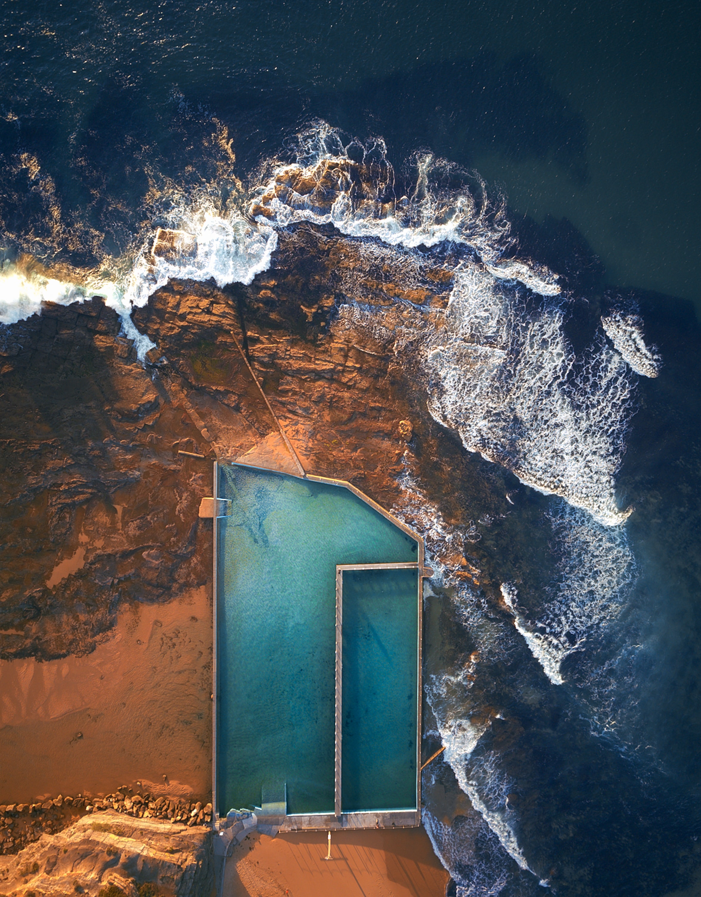

Why Sydney?
Sydney, the vibrant city
A bright, modern city embedded in nature, where gallery-hopping, surfing, and fine-dining can all take place in a single day. A city of iconic attractions and natural beauty, Sydney is a destination you'll never forget.
To understand why this city is so singular, take the clifftop coastal walk from Bondi to Coogee, where you will pass by beaches, rock pools, and lush parks. Instead of limiting yourself to the well-known, make sure you enjoy the bush, parks, beaches and swimming spots.